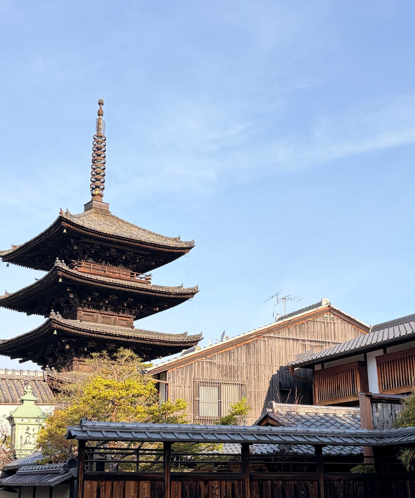
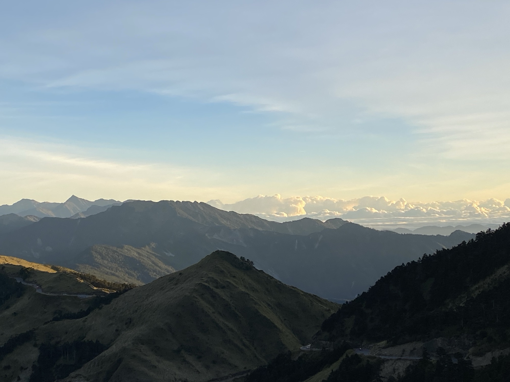
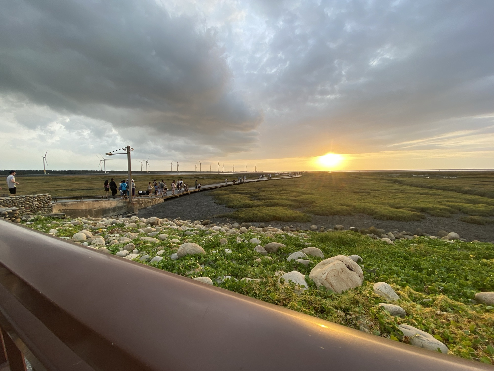
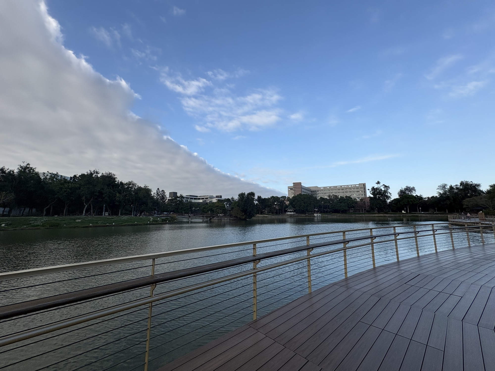
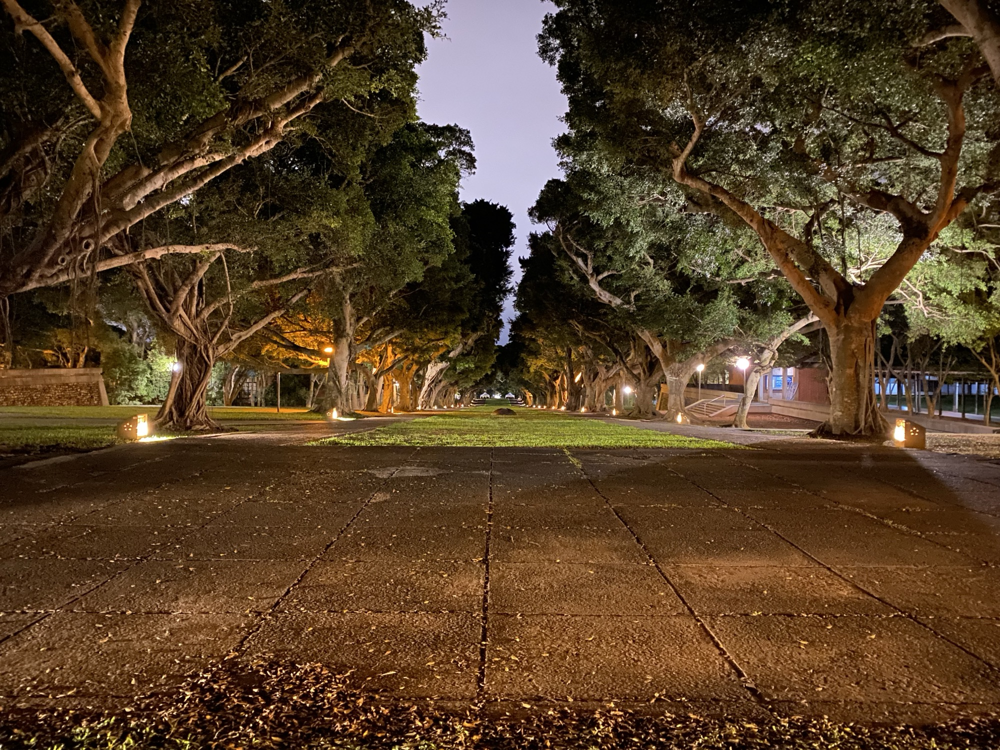
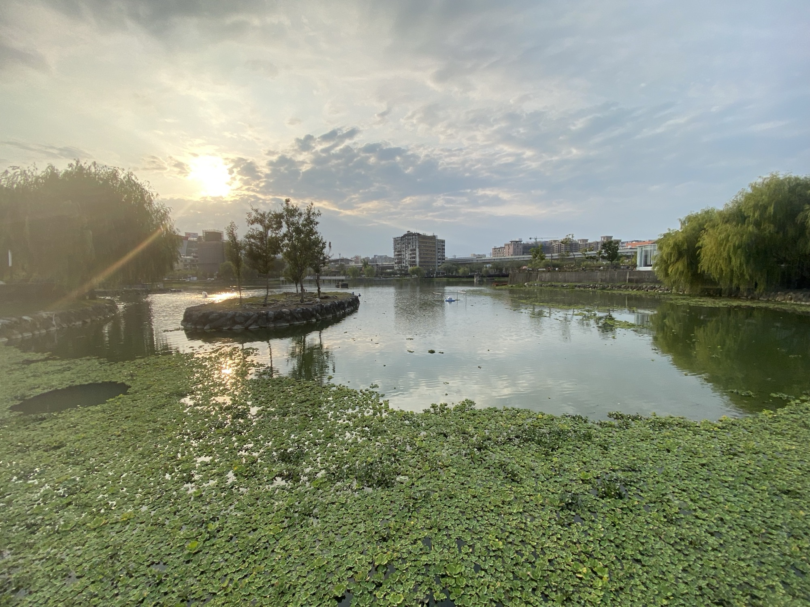

NEOMA Business School
Master in Management
Culture & Creative Industry
New Taipei City, Taiwan → France
Industrial engineer working where lasers meet data: micromachining, experimental design and parameter analysis. Now studying culture & creative industry management in France.
I'm curious by nature and comfortable in between worlds: an engineer who loves communication as much as precision. I learn fast, ask a lot of questions, and enjoy turning complex ideas into stories others can follow.
I'm a master's student in Industrial Engineering and Engineering Management at National Tsing Hua University. My work spans laser processing, surface measurement and optimization, and I also build database and web tools for university offices.
Since September 2026 I've been at NEOMA Business School for a Master in Management in Culture & Creative Industry, bringing an engineer's way of thinking to branding, retail and customer experience.
Master in Management
Culture & Creative Industry
Master of Engineering
Industrial Engineering & Engineering Management
Bachelor of Engineering
Industrial Engineering & Enterprise Information
Hands-on work with precision equipment, measurement and automation.
Used to evaluate process results and support research validation.
National Tsing Hua University · Office of Global Affairs
National Tsing Hua University · Dept. of Foreign Languages & Literatures
A PLUS Smart Traffic Technology
Tunghai University · Office of Sustainable Development and Institutional Research
Things I build, and campus roles at National Tsing Hua University connecting people, cultures and ideas.
International Conference on Industrial Engineering and Applications
“Multi-objective Optimization of Geometric Characteristics in Femtosecond Laser Micromachining via NSGA-II”
First author“Optimizing Electric Vehicle Charging Station Deployment Using CRITIC Weighting and NSGA-II: A Case Study of Taichung City”
Second authorTwo papers presented at an international academic conference.
Wrote a business plan turning laser coloring technology into a product.
Built an XGBoost stock-trend prediction model: data cleaning, feature engineering, training and evaluation.
Worked with a company on TPS improvements through industry-academia collaboration; second place at the management seminar.
Built a hospital wayfinding web app in JavaScript, opened by scanning QR codes. Shortlisted in the poster category.
Designed a sustainable tourism itinerary for Yilan and passed the preliminary round.
Developed an AR bus app to solve hard-to-read bus stop signs; passed the initial selection.
Always curious,
always looking closer.
Photography from Taiwan and beyond. Click any photo to enlarge.





